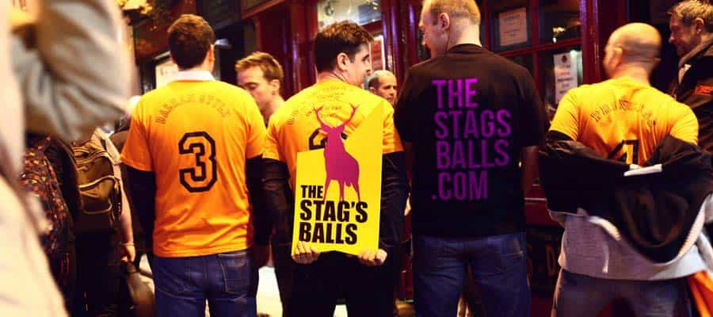

Kyle is an entrepreneur and nomad who has been living abroad since 2016. He blogs at This Is Trouble. Follow him on Facebook.


My time out on the road has a nomad has led me to meeting a lot of interesting people. It’s also led to me carefully planning my time in certain cities due to over-saturation. And of course, I’ve learned all about how the stag parties system works. The nights to go out, and nights to avoid. Here are the 5 types of people you’re going to meet while traveling, in all their stereotypical glory.
You can often find them walking around with selfie sticks, rushing to make sure they hit every tourist attraction, eating at all the overpriced restaurants.
For the most part, they don’t have much applicable information to traveling nomads and players, except the congestion and spike in prices they cause during the peak months of the year.
Bringing the disgusting to EE, one party at a time.
I’ll never forget when I was walking around Prague last year. A group of five girls was heading directly towards my Ukrainian girl and me. As they approached, I heard the voices. Shrill, loud harpies. Americans.
Of course, the sidewalks of Prague are incredibly narrow. You aren’t fitting more than five people wide to them. My girl and I were walking on the right hand side, the American girls were walking five-across in the fear of being left behind and trying to be the alpha female of the group.
When you spend significant time in a tourist town like Prague, you realize if you get out of the way for every dumb and clueless person walking around, you’d spend an hour a day getting out of the way. I thought it’d be far more amusing to let the one closest to me simply crash into me.
It worked a charm, and as she stumbled into her friend closest to her and their nearly fell, they both turned around and shrieked, “Excuse me!!! That was rude!!!”
I simply turned around and said, “You’re excused.” Cue looks of shock and wet panties.
The point is, the stag parties have been increasingly in numbers for years now. Crappy airline carriers like Ryanair and EasyJet keep adding $30 flights from Western to Eastern countries. The problem is that now the female bachelorette parties are starting to come out in full force, too.
The hope is that the male and female stag parties find each other to act like morons together all night, rather than polluting the rest of the dating pool.
Speaking of, let’s talk about the male stag parties.

Like I said, all of the cheap flights from western Europe has made these stag parties a weekly ordeal from March to October. Every weekend, from Friday to Sunday, large groups of guys walk around drinking way too much. Sometimes they even have GoPros on their heads.
Pro tip: The majority of them want to get the cheapest possible flights. Those cheap carriers that offer fares in the $30-and-under range have to fly very early. The reason is because the reason they can offer those cheap fares is because they agree to fly out of the airport (and therefore, use up a gate) when no one else is. Therefore, it’s common for the stag parties to get on the 5:30am flight from London to Poland or another EE country.
They are often absent on Wednesday and Thursday nights. Many clubs in the stag-infested cities of Europe actually make a point to have things going on Wednesdays and Thursdays so that the locals can come have a good time. Become a regular on those nights. Take Friday and Saturday off.
However, there is one function about these stag parties that you can use to your advantage.
They are desperate for good information about the city. Rarely has any of the guys in the party actually bothered to research some intel about where to go for a good night. They’ll be thrilled to meet a “local” like yourself who has good intel.
You can use them to get into a social mood (at the BEGINNING of the night only), and you can tell them to check out places that you don’t plan to go to that night. Tell them that you think XYZ Club will be going off—which is the club that is chock-full of these parties every weekend. Let them go off on their merry way (they won’t remember anyway), and then hit the good venues yourself.
This can be very good, or very bad. You see, the road can and does get lonely sometimes. It’s easy to sell the perks and glamour of the life. However, when you’ve living in a foreign country and don’t know many people—yeah, it gets lonely. While men aren’t as dependent on socializing as females (more on that below), we do need some social life to be happy, too.
So let’s say you meet a fellow single guy on the road. More than likely, he’s going to fall into one of two categories:
Number 1 is a no-brainer. You can have him as a wingman, and he’ll make the majority of your nights overall a better experience. Of course, there are people you just don’t click with, but if he’s game-aware, the odds are in your favor.
Number 2 is a bit tougher to analyze. You see, sometimes some company is better than no company. If he is the type of man who is open to becoming unplugged, you might have a winner. If he talks about western girls with distaste, you can start to share a bit of your story. Hopefully, he can see you as something to aspire to be. If he has this open mind, he could make excellent coffee-shop company a few times a week, and maybe even a decent wingman.
The problem is that if he’s stubborn to taking the red pill—good luck. More than likely, he is lonely and wants company. The trip has caught him off guard—he probably doesn’t know how to be solitary. He’s going to want your phone number, he’s going to want to hang out every day, and he’s going to want to accompany you out to talk to the ladies.
And I promise he won’t do anything but scare them away.
Wearing sunglasses to cover up the cum stuck on her face from the night before.
This is the type of traveler the traveling player gets giddy for. Women can rarely handle being alone for prolonged periods of time. They are social creatures. Whilst she may claim she’s taking the trip to explore deep inside herself, it won’t be her doing the exploring. It’ll be the numerous amounts of cock taking the trip deep inside her.
Tip: It matters where you meet her, too. A girl traveling alone in Rio, or Barcelona? Rest assured she’s ready for some hooking up. If a Western girl has taken the time to get a Russian visa, she might have an actual interest in the language and culture.
Despite what they say, female solo travelers very rarely end up actually spending that time alone. They don’t do solitary activities to discover who they are or learn about the world. Instead, they typically join the “free hostel-sponsored walks” around old town cities, and go out to every single pub crawl imaginable. Like I said, they need to socialize.
To any men on the road: when a girl tells you she’s been traveling solo for more than a week, your radar should be on full blast. She’s probably lonely. She wants to have adventure. And best of all, she has the discretion she needs to have a one night stand.
She’s all yours.
If you want to learn how to play the field properly abroad, check my course on Tinder and text game. For more insights into the rest of the world, visit KyleTrouble.com.
Read More: 7 Things I Learned On The Road This Year